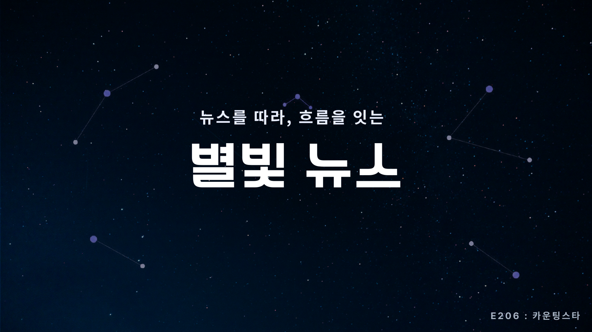
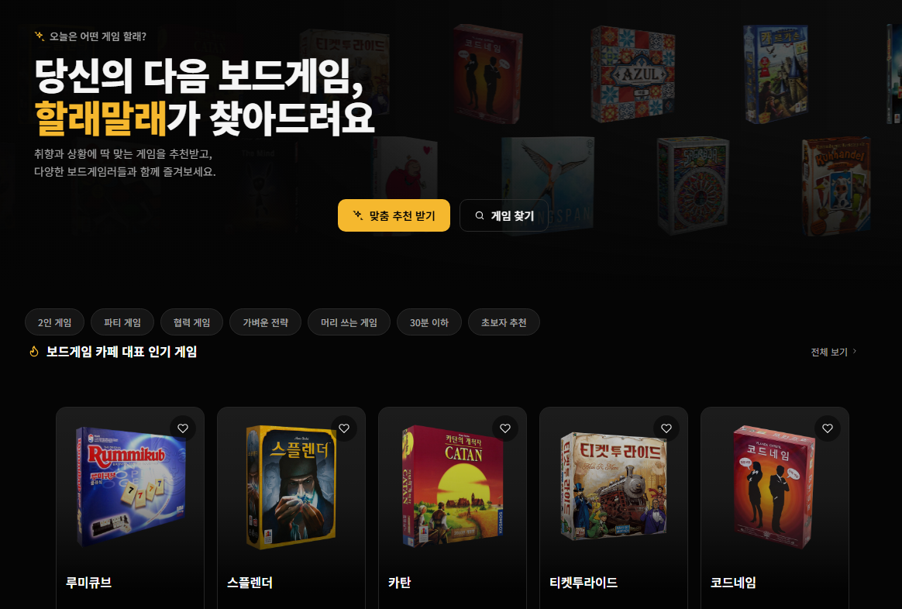
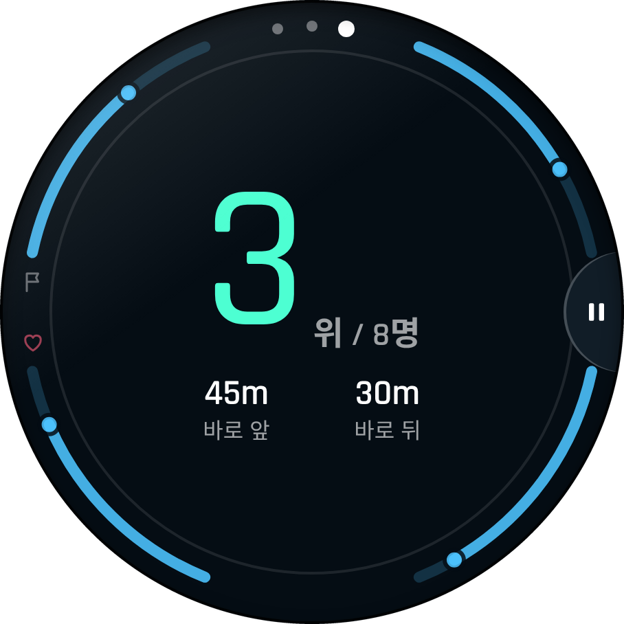
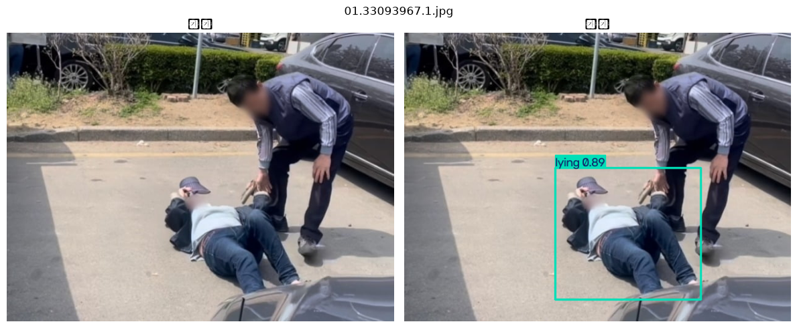
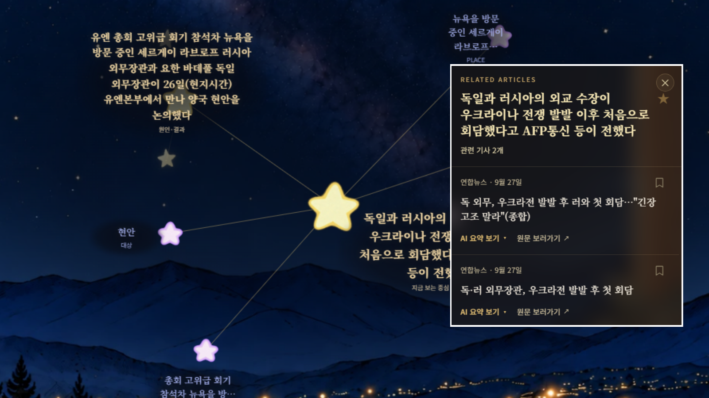

PORTFOLIO · AI SERVICE · BACKEND
AI 기능을
실제로 쓰이는 서비스로
끝까지 연결하는 개발자,
김강민입니다.
국어국문학과 한국어데이터정보학을 공부하며 자연어처리를 시작했고, 의료 AI 실무와 SSAFY 프로젝트에서 AI 기능과 서버를 직접 개발했습니다. 최근 RunWay에서는 그룹런 실시간 순위와 러닝 분석 서버를 맡아, 동시에 들어오는 요청과 계속 바뀌는 측정값을 다뤘습니다.
RunWay 개인 커밋
번호판 OCR 완전일치 정확도
할래말래 렌더링 (1초 이내)

01 · 경력과 기술
언어 데이터에서 출발해 AI 서비스 개발까지 이어 왔습니다.
학업 6년, 의료 AI 실무 3개월, SSAFY 교육과 프로젝트 (2019~2026)
경상국립대학교
국어국문학 · 한국어데이터정보학
한국어 혐오표현 탐지
모델 학습과 검증
Data.Ly
프리랜서
추론문 작성과
학습 데이터 태깅
에스피메드
IT 업무 보조
의료 챗봇, 약물 리포트,
변이형 판별 알고리즘
SSAFY
삼성 청년 SW·AI 아카데미
1학기 925시간 이수,
AI 관통 프로젝트 97점
RunWay
SSAFY 자율 프로젝트
그룹런·러닝 분석 서버,
앱·워치 연동
Source: 본인 이력서, 각 프로젝트 저장소 (2026.11 기준)
02 · 프로젝트 한눈에
7개 프로젝트에서 제가 직접 맡은 영역입니다.
팀 전체 기능이 아니라 본인 담당만 표시했습니다. 아래 슬라이드에서 대표 사례를 자세히 설명합니다.
| Role matrix | AI·데이터 | 백엔드 | 인프라 | 앱·화면 |
|---|




Source: resume 저장소 portfolio/README.md, 각 프로젝트 저장소와 커밋 이력
03 · 대표 프로젝트 · RUNWAY
워치 데이터로 러닝을 코칭하는 서비스에서 서버를 맡았습니다.
Galaxy Watch로 심박·페이스를 모아 개인과 그룹 러닝 중 페이스를 맞춰 주는 AI 러닝 코치 서비스입니다.
What I built
- 1그룹런 서버 전체 흐름모집, 대기방, 시작, 실시간 순위, 강제 종료, 결과까지 API로 구현했습니다.
- 2러닝 기록과 분석기록·통계 조회, 종료 후 자동 분석, AI 심박 개인화 연동을 만들었습니다.
- 3커뮤니티·크루·코스 API게시물·댓글·스크랩, 크루 가입·탈퇴, 코스 추천·북마크와 PostGIS 공통 변환 유틸을 만들었습니다.
- 4앱·워치 연결과 시연 안정화React Native 화면을 API에 연결하고, 워치 세션 제어와 휴대폰 단독 러닝을 붙였습니다.
My commits
영역별 변경 파일 수 (중복 제외, 막대 기준 400)
Source: RunWay 팀 GitLab 저장소(비공개) dev 브랜치, 김강민 커밋 기준 (2026.10.26~11.18)
04 · 설계 · 그룹런 실시간 순위
코스 없이 각자 다른 길을 달려도 순위를 매겨야 했습니다.
그룹런 참가자의 워치 측정값으로 순위와 앞뒤 간격을 계산하는 기능 (G10)
- 상황
- 코스 그룹런은 모두 같은 길을 달리지만, 자유 그룹런은 참가자마다 경로가 달라 누적 거리만으로는 누가 앞서는지 알 수 없었습니다.
- 판단
- 모드별로 진행도 기준을 나눴습니다. 코스 모드는 누적 거리, 자유 모드는 가장 멀리 간 참가자의 궤적 위로 다른 참가자 위치를 투영해 진행도를 구합니다.
- 구현
- DB 없이 입력 샘플만 받는 순수 계산기
GroupRunLiveRanking으로 분리했습니다. 1m 이내 차이는 같은 순위로 묶고, 60초가 지났거나 미래 시각인 측정값은 0등을 만들지 않도록 순위에서 뺐습니다. - 결과
- 참가자 워치에 "8명 중 3위, 바로 앞 45m" 형태로 표시되고, 계산 로직은 단위 테스트로 따로 검증할 수 있게 됐습니다.
Free mode projection

워치에 순위와 앞뒤 간격 표시
공동 페이스는 참가자 페이스의 중앙값으로 따로 계산했습니다.
Source: RunWay S15P31E105-424 (김강민 커밋) / 워치 화면은 디자인 시안
05 · 트러블슈팅 · 데이터 정합성
게시물 작성과 기록 삭제가 겹치면 삭제된 기록에 게시물이 남을 수 있던 문제
러닝 기록을 공유하는 게시물 작성(CMT01)과 러닝 기록 삭제(S09)의 동시 실행
- 문제
- 사용자가 러닝 기록을 삭제하는 순간 같은 기록으로 게시물을 올리면, 기록은 지워졌는데 그 기록을 가리키는 게시물이 살아남을 수 있었습니다.
- 원인
- 게시물 작성은 기록을 잠금 없이 조회했습니다. 삭제 트랜잭션과 순서가 엇갈리면 "삭제 전" 상태를 보고 통과한 뒤 게시물을 저장했습니다.
- 해결
- 작성 시 기록 행을
SELECT … FOR UPDATE로 잠그고, 삭제와 같은 기록 → 게시물 순서로 잠가 교착 없이 직렬화했습니다. 잠금 아래에서 미삭제·완료 상태를 다시 확인합니다. - 결과
- 두 요청을 동시에 실행하는 통합 테스트를 10회 반복해, 삭제된 기록에 남은 게시물이 0건임을 확인했습니다.
After · 같은 순서로 잠금
게시물 작성
기록 삭제
CMT01과_S09가_겹쳐도_삭제된_세션에
미삭제_게시물이_남지_않는다 ✓ passed
같은 방식으로 크루 동시 승인도 테스트로 재현해, 두 건이 동시에 와도 한 건만 승인되는지 검증했습니다.
Source: RunWay S15P31E105-280, 593 (김강민 커밋, 2026.11) · 크루 행 잠금 자체는 팀원 작업(570)
06 · 설계 · 러닝 종료 후 분석
러닝 기록 저장과 분석을 한 트랜잭션에 묶지 않았습니다.
러닝 종료 후 구간 분석과 AI 심박 개인화를 처리하는 흐름
- 상황
- 종료 후 분석은 기록 전체를 계산하고, 심박 개인화는 외부 AI 서버를 호출합니다. 시간이 걸리고 실패할 수도 있습니다.
- 판단
- 기록 저장이 분석 성공에 묶이면 안 된다고 보고, 저장 트랜잭션이 커밋된 뒤 분석을 시작하도록 분리했습니다.
- 구현
@TransactionalEventListener(AFTER_COMMIT)로 분석 작업을 넘기고, 서버가 재시작되면 끝나지 않은 분석을 찾아 이어서 처리합니다.- 결과
- 종료 응답은 분석을 기다리지 않고, 분석이 실패해도 러닝 기록은 남습니다. 결과 화면은 서버의 분석 상태를 받아 갱신합니다.
Flow
기록 저장
이벤트 발행
결과 저장
AI 심박 개인화
워치 기록을 AI 서버 요청 형식으로 변환해 같은 방식으로 호출
재시작 복구
서버가 다시 뜨면 미완료 분석을 찾아 이어서 처리
결과 화면 연결
러닝 종료 화면이 서버의 분석 상태와 요약을 받아 갱신되도록 앱까지 연결했습니다.
Source: RunWay S15P31E105-312, 410, 663 (김강민 커밋, 2026.11)
07 · R0-KI
움직이는 로봇 카메라에서도 번호판을 안정적으로 읽어야 했습니다.
AI 순찰 로봇과 실시간 관제 플랫폼

탐지
누적
선별
확정
- 접근
- 한 장면만 보지 않고, 같은 차량의 여러 프레임에서 번호판 후보를 모았습니다.
- 구현
- YOLO로 탐지한 뒤 품질 상위 3개 후보만 남기고, 다수결로 최종 번호를 정했습니다.
- 결과
- 검증 데이터에서 번호판 글자가 모두 맞아야 정답으로 치는 완전일치 기준으로 측정했습니다.
번호판 OCR 완전일치 정확도
Source: github.com/kimgm1018/RoKi ai/README.md (OCR 검증 결과)
08 · 별빛뉴스
배포를 사람 손에 맡기지 않도록 CI/CD를 구성했습니다.
사건의 맥락을 탐색하는 지식 그래프 뉴스 서비스
Deploy pipeline
저장소에 변경 푸시
파이프라인 자동 실행
서비스별 이미지 생성
EC2에서 컨테이너 기동
외부 요청을 서비스로 전달

Source: github.com/kimgm1018/star_news README, 개인 담당 범위는 본인 확인 기준
09 · 의료 AI 실무 · 에스피메드
전문 의료 데이터를 근거 있는 답변과 리포트로 바꿨습니다.
IT 업무 보조로 일하며 세 가지 기능을 개발했습니다 (2025.08~2025.10)
Healthcare chatbot
의료 AI 챗봇
RAG · LangGraph · FastAPI
PGx report
약물유전체 리포트
LLM · RAG · JSON
Genotype calling
CYP2D6 변이형 판별
Python · BioPython · SciPy
Source: github.com/kimgm1018/chat_bot README, autocalling_web README, 본인 업무 기록
10 · 할래말래
메인 화면이 뜨는 데 10초 걸리던 문제를 1초 이내로 줄였습니다.
보드게임 추천 커뮤니티
- 문제
- 메인 화면 하나를 그리기까지 10초가 걸렸습니다.
- 해결
- API 응답 구조를 화면에 필요한 형태로 정리하고, 반복되던 조회를 줄였습니다.
- 결과
- 렌더링 시간 1초 이내
- 함께 만든 것
- LangGraph 챗봇에 KNN 추천 도구를 연결하고 SSE로 응답을 흘려보냈습니다.
Source: github.com/halraemallae/boardgame-recommendation-community, 본인 개발 기록
CONTACT
다음 서비스도
끝까지 함께 만들고 싶습니다.
AI 기능을 서비스에 붙이는 일, 실시간 데이터와 동시 요청을 다루는 서버에 관한 이야기라면 언제든 환영합니다.